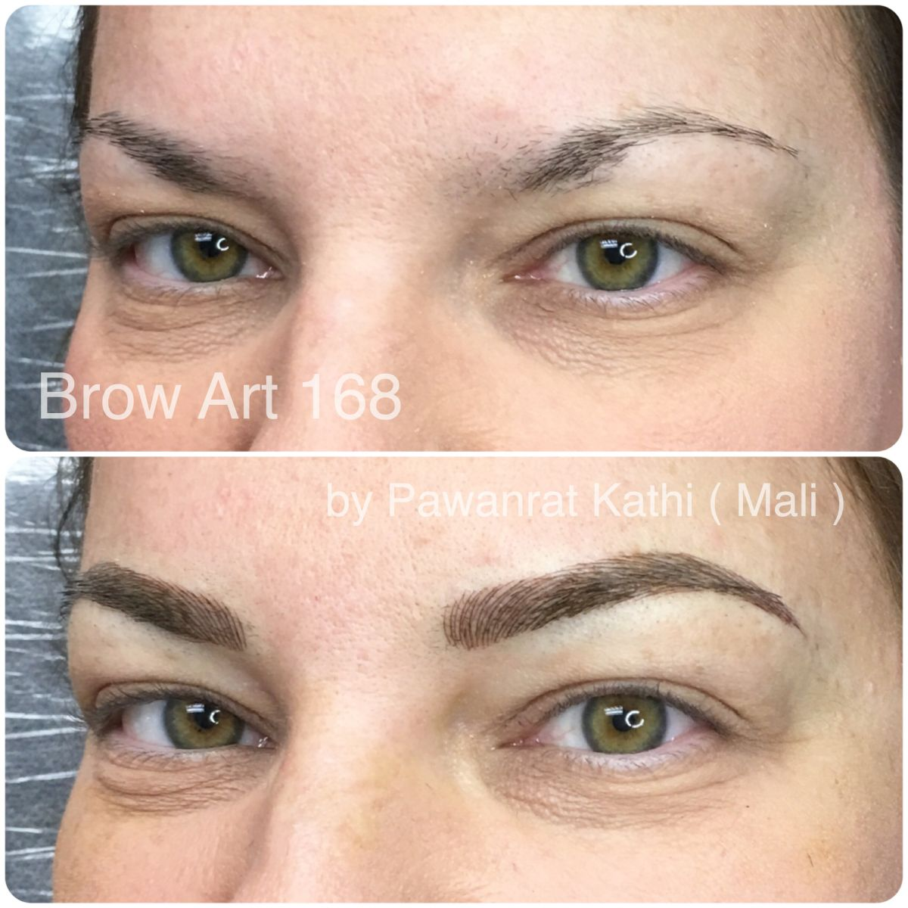

Microblading Eyebrow




Best way to contact me is via text message, you will get the fastest response this way, see my phone number below. You are also welcome to contact me by phone, email or Facebook.
Microblading is a manual permanent makeup technique using a special blade to draw pigments into the skin. With skillful use, it allows creating very fine lines for a more natural look.
The whole procedure takes about 2.5 hours including the initial consultation on shape and color when I draw with a pencil as we decide for the ideal shape. There is some time needed for the application of the anesthetics.
In most cases, a one-month touchup is needed to fill in where the color didn’t take evenly. There are many factors that decide how the color stays and there can be small spots where lines are not even or some color is missing.
It is a form of a tattoo, although the technique and the pigments used are different.
It’s semi permanent, the color will fade with time, generally you need to touchup every 11- 18 months depending on type of skin (oily skin makes color fading faster), activity and how you take care of them. You should avoid strong sun, whitening cream and laser treatment on permanent makeup area. The good thing with fading is that it makes it possible to change the shape and follow different fashion trends.
Absolutely, I follow strict hygiene and sterilization procedures that conform to OSHA using disposable needles and sterilization of equipment as required. You’re in very safe hands.
Not painful. I use a topical anesthetic which is applied prior and during each procedure to numb the epidermis and help ease any discomfort. You will feel a bit burning just about 1 minute.
Yes, I try the best to make your eyebrows look like real eyebrow hair. Immediately after the treatment the color will appear stronger and darker. Within the first 7-14 days, during the healing process, you can lose approximately 30-40% of complete color.
Yes, during the consultation, I draw the desired shape with a pencil. I usually also make suggestions depending on the shape of the face and the existing eyebrow hair.
For best result, the color should match the existing eyebrow hair. If there is no eyebrow hair at all, the color should match the color of the hair.
No, however if a different shape is desired, it could be necessary to shave off around the outline.
The method I use results in very natural looking eyebrows even if there are no eyebrow hair at all.
Yes, definitely. It is possible to change the shape or fill in any gaps for more symmetry. This will eliminate the daily makeup procedure of the eyebrows.
There is a healing period of 7 – 14 days. The second day after the treatment, the color looks darker. 4 – 7 days after the treatment there are some tiny scabs and the looks are not the best. The real color appears after about a month.
Microblading eyebrow: $450
Touchup within 3 months: $69
Touchup between 3 months and 1 year $100
Touchup after 1 year - 1 and half year $150
Touchup after 1 and half year - 2 years $200
Touchup price only for clients that had eyebrows microblading done at BrowArt168
Eyeliner: $350
Touchup: $100
Touchup price only for clients that had eyeliner done at BrowArt168
Lip Brush: $350
Touchup: $100
Touchup price only for clients that had lip brush done at BrowArt168